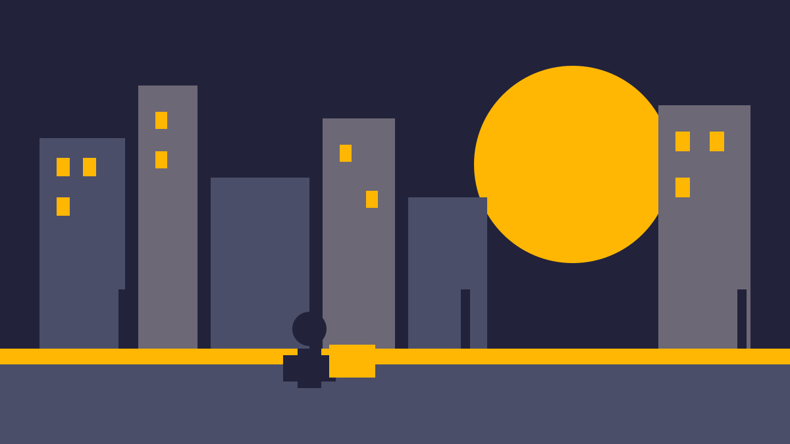

Что внутри

Город разделён на семь районов, между ними ходит одна дрезина и ваши ноги. Сюжет держится на мелочах: посылку можно вскрыть, прочитать письмо и получить второй маршрут, о котором заказчик не просил.
Бои редкие и злые. Драться невыгодно: аптечки дороже, чем крюк в три квартала. Игра это знает и не наказывает за трусость.
Обсуждение идёт под тегом #ХРОНИКИНЕОНОВОГОЗАКАТАРЕЖИССЁРСКАЯВЕРСИЯБЕЗСПОЙЛЕРОВ, полный разбор маршрутов — https://igroteka.example/reviews/2026/neon-sunset-directors-cut
Системные требования
| Компонент | Минимум | Рекомендуется |
|---|---|---|
| Процессор | Core i3-8100 | Ryzen 5 5600 |
| Память | 8 ГБ | 16 ГБ |
| Видеокарта | GTX 1050 Ti | RTX 3060 |
| Место на диске | 34 ГБ | 34 ГБ, SSD |